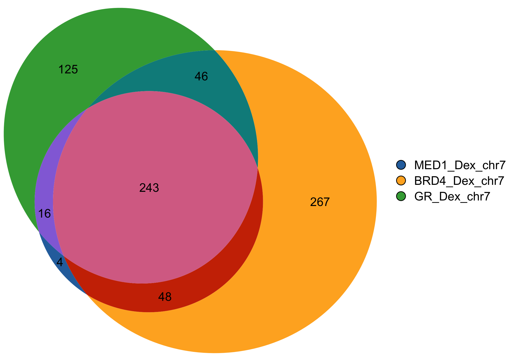
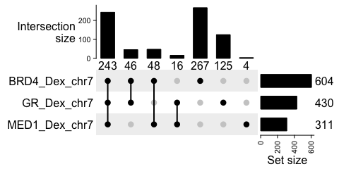

Proportional Venn diagrams for genomic regions and gene set overlaps

gVenn stands for gene/genomic Venn.
It provides tools to compute overlaps between genomic regions or sets of genes and visualize them as Venn diagrams with areas proportional to the number of overlapping elements. With seamless support for GRanges and GRangesList objects, gVenn integrates naturally into Bioconductor workflows such as ChIP-seq, ATAC-seq, or other interval-based analyses, and produces clean, publication-ready figures.

The gVenn hex logo was generated using the hexSticker R package (code)
Installation
The gVenn package is available through Bioconductor and GitHub.
You can install it from Bioconductor using:
if (!require("BiocManager", quietly = TRUE))
install.packages("BiocManager")
BiocManager::install("gVenn")To install the development version from GitHub, use:
# install.packages("pak") # if not already installed
pak::pak("ckntav/gVenn")
# or, alternatively:
# install.packages("devtools") # if not already installed
devtools::install_github("ckntav/gVenn")Documentation
For comprehensive documentation and vignettes, visit the gVenn documentation page.
Quick start
This quick example demonstrates how to compute overlaps between ChIP-seq peaks and visualize them with both a Venn diagram and an UpSet plot.
1. Load example ChIP-seq data and compute overlaps
library(gVenn)
# Example dataset of ChIP-seq peaks (A549 cell line, 3 set of genomic regions)
data(a549_chipseq_peaks)
# Compute overlaps
ov <- computeOverlaps(a549_chipseq_peaks)
#> Loading required namespace: GenomicRanges2. Visualize
# Draw Venn diagram
plotVenn(ov)
# Draw UpSet plot (useful for larger numbers of sets)
plotUpSet(ov)
3. Extract elements per overlap group
groups <- extractOverlaps(ov)
# Display the number of genomic regions per overlap group
sapply(groups, length)
#> group_010 group_001 group_100 group_110 group_011 group_101 group_111
#> 267 125 4 48 46 16 243In this example:
- 243 peaks are shared across all three factors (MED1, BRD4, and GR)
- 267 peaks are unique to BRD4
- 48 peaks are shared between MED1 and BRD4 only
Overlap group naming
When overlaps are computed, each group of elements or genomic regions is labeled with a binary code that indicates which sets the element belongs to.
- Each digit in the code corresponds to one input set (e.g., A, B, C).
- A 1 means the element is present in that set, while 0 means absent.
- The group names in the output are prefixed with “group_” for clarity.
| Group name | Meaning |
|---|---|
group_100 |
Elements only in A |
group_010 |
Elements only in B |
group_001 |
Elements only in C |
group_110 |
Elements in A ∩ B (not C) |
group_101 |
Elements in A ∩ C (not B) |
group_011 |
Elements in B ∩ C (not A) |
group_111 |
Elements in A ∩ B ∩ C |
Retrieve one particular overlap group
Each overlap group can be accessed directly by name for downstream analyses, including motif enrichment, transcription factor (TF) enrichment, annotation of peaks to nearby genes, functional enrichment or visualization.
For example, to extract all elements that are present in A ∩ B ∩ C:
# Extract elements in group_111 (present in all three sets: MED1_Dex_chr7, BRD4_Dex_chr7, GR_Dex_chr7)
peaks_in_all_sets <- groups[["group_111"]]
# Display the elements
peaks_in_all_sets
#> GRanges object with 243 ranges and 1 metadata column:
#> seqnames ranges strand | intersect_category
#> <Rle> <IRanges> <Rle> | <character>
#> [1] chr7 1156721-1157555 * | 111
#> [2] chr7 1520256-1521263 * | 111
#> [3] chr7 2309811-2310529 * | 111
#> [4] chr7 3027924-3028466 * | 111
#> [5] chr7 3436651-3437214 * | 111
#> ... ... ... ... . ...
#> [239] chr7 158431413-158433728 * | 111
#> [240] chr7 158818200-158819318 * | 111
#> [241] chr7 158821076-158821876 * | 111
#> [242] chr7 158863108-158864616 * | 111
#> [243] chr7 159015311-159016245 * | 111
#> -------
#> seqinfo: 24 sequences from an unspecified genome; no seqlengths